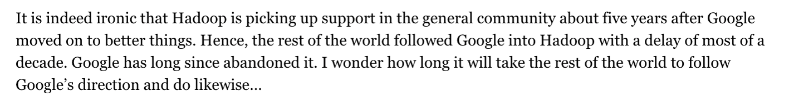

Large Scale Data Management
Contents
6. Large Scale Data Management#
In diesem Kapitel geht es insbesondere darum, die Verfahren und Datenbankoperationen, die wir bisher kennengelernt haben, hinsichtlich paralleler Verarbeitung zu betrachten und auch die Kostenelemente, die dann eine Rolle spielen.
Beim Large Scale Data Management geht es um sehr große Datenmengen. Da reicht es dann nicht mehr, nur eine Datenbank zu haben, man muss nun auch über die Verteilung, Server und Nebenläufigkeiten nachdenken.
Fig. 6.1 Large Scale Data Management#
Zur Wiederholung einmal die Frage: Was ist Big Data? Big Data wird anhand von Dimensionen spezifiziert- die sogenannten V’s: Volume (Menge von Daten), Velocity (Schnelligkeit der Datenverarbeitung), Variety (Heterogenität der Daten), Verocity (Daten, bei denen die Korrektheit ungewiss ist) und Value (die Wertigkeit der Daten).
Nun gibt es Big Data in zwei Varianten - Operational und Analytic. In der ersten Variante geht es um operationelle Sachen, also dem Transaktionsmanagement. In der zweiten Variante geht es darum, Daten zu analysieren, Insights aus Daten herzustellen und neue Erkenntnisse zu gewinnen.
Zur Verdeutlichung, über was für Datenmengen wir bei Big Data reden:
Google ist ein klassisches Beispiel für ein Datenproduzierendes und -verwaltendes Unternehmen. Dort werden jeden Tag 20 PB an Daten verarbeitet. Das sind Billionen von Zeilen, Tausende/Millionen Spalten und Tabellen, aber auch strukturierte Daten wie Text, Bilder und Videos. Würde man versuchen, diese 20 PB mit 50 MB/s zu lesen, würde das 12 Jahre dauern. Aus diesem Grund werden die Daten partioniert und verteilt verarbeitet.
6.1. Key enabler: Virtulization#
Die beiden Varianten Operational und Analytic lassen sich mit der Virtualization managen. Hierbei versucht man entweder ein logisches System auf viele physische Systeme (Load Balancing) oder andersherum mehrere logische Systeme auf ein physisches System abzubilden (Multy-Tenancy).
Fig. 6.2 Virtualization#
6.2. Parallel Data Processing#
Was bisher geschah: Serielle Verarbeitung/Single Threaded
Bisher haben wir immer von einem Computer mit mehreren Festplatten gesprochen und damit auch ein wenig über parallele Plattenzugriffe. Diese hatten insbesondere auch immer nur einen Kern. Das heißt, bei jeder Operation wurden die Blöcke nacheinander durch nur einen Kern abgearbeitet. Außerdem spielten auch Synchronisation und Kommunikation keine Rolle, da Anfragen in nur einem Thread bearbeitet wurden. Dies wollen wir nun erweitern.
Fig. 6.3 Serial Single Threaded#
Was wir verschwiegen haben…
Das Datenvolumen wächst stetig. Data Warehouses mit 1 EB sind nicht untypisch. Manche Organisationen produzieren täglich mehr als 1 PB an neuen Daten. Das entspricht 1.000.000.000.000.000 Byte (1 quadrillion). Manche Systeme, wie beispielsweise Finanzinstitute, Onlineshops und soziale Netzwerke, haben einen sehr hohen Durchsatz (throughput) von Transaktionen. Deshalb ist es wichtig zu überlegen, wie die Zugriffe über die Netzwerke verteilt werden. Auch Analyseanfragen werden immer komplexer. Eine statistische Mustererkennung ist teuer und über die Daten muss mehrfach iteriert werden. Da reicht eine Single-CPU- oder Single-Node-Architektur nicht mehr aus und auch Moore’s Law ist hier nicht mehr anwendbar. Die Lösung: Parallele Datenverarbeitung.
6.2.1. Grundlagen der Parallelen Datenverarbeitung (Parellel Processing)#
Bei der parallelen Datenverarbeitung kommt Amdahl’s Law zum Einsatz, welches die Grenzen bei der parallelen Beschleunigung definiert. Es gibt außerdem verschiedenen Stufen der Parallelisierung, mit denen auf unterschiedlichen Ebenen parallelisiert werden kann. Des Weiteren existieren noch verschiedene Varianten der Anfrage-Parallelisierung. Dadurch können mehrere Anfragen parallel verarbeitet werden (Inter-Query) oder nur eine Anfrage (Intra-Query).
6.2.2. Parallel Speedup – Amdahl‘s law#
Die Frage die sich bei Amdahl’s law stellt ist, wie viel wir an Geschwindigkeit überhaupt dazugewinnen können. Berechnen lässt sich das zum einen mit der sequentiellen Laufzeit \(T_1\) (1 Prozessor) und zum anderen mit der parallelen Laufzeit \(T_p\) (p Prozessoren): \(S_p\) = \(\frac{T_1}{T_p}\) . Die maximale Beschleunigung ist durch den nicht-parallelisierbaren Anteil des Programms begrenzt. Wie hoch diese ist, lässt sich folgendermaßen berechnen: \(S_p\) = \(\frac{1}{(1 - f) + \frac{f}{p}}\) .
Die Variable f entspricht prozentual dem parallelisierbaren Anteil. Die ideale Beschleunigung wäre S = p für f = 1. Oft ist f < 1 während S durch eine Konstante begrenzt wird. Beispiel: f = 0,9 und 10/20 Server. \(S_p\) = \(\frac{1}{(1 - f) + \frac{f}{p}}\) = \(\frac{1}{(1 - 0,9) + \frac{0,9}{10}} \approx \) 5,3 und \(S_p\) = \(\frac{1}{(1 - 0,9) + \frac{0,9}{20}} \approx \) 6,9 . Lassen wir hier unsere Prozessoren gegen unendlich laufen, ist unser \(S_p\) = 10. Das bedeutet, wir können weitere Server hinzufügen, aber es bleibt bei der 10-fachen Geschwindigkeit.
Hier sehen wir, wie sich die parallele Beschleunigung nach Amdahl’s law je nach Prozessorzahl verhält.

Fig. 6.4 Parallel Speedup#
6.2.3. Parallelisierungsstufen auf der Hardware#
Es gibt unterschiedliche Stufen der Parallelisierung auf der Hardware. Zum einen gibt es Instruction-level parallelism (Prozessoranweisungen). Dabei werden Prozessorbefehle durch die CPU-Architektur automatisch parallelisiert. Zum Anderen gibt es Data parallelism (Daten). Jeder Prozessor verarbeitet die gleichen Befehle auf seiner eigenen Partition der Daten. Dadurch können unterschiedliche Daten parallel verarbeitet werden, beispielsweise durch verteilte Schleifeniterationen auf mehreren Prozessoren oder GPU processing. Auf der letzten Stufe der Parallelisierung haben wir Task parallelism (Aufgaben). Hierbei erhält jeder Prozessor/Knoten eine andere Aufgabe.
6.2.4. Varianten der Anfrage-Parallelisierung#
Es existieren unterschiedliche Varianten der Anfrage-Parallelisierung. Die erste Variante ist Inter-Query Parallelism (mehrere nebenläufige Anfragen). Dies ist wichtig für eine effiziente Ressourcennutzung. Wartet eine Anfrage z.B. auf I/O, kann in der Zeit eine andere Anfrage ausgeführt werden. Dies erfordert Concurrency Control, also das Sperren, um Transaktionseigenschaften zu garantieren. Das ist auch wichtig für OLTP. Die zweite Variante ist Intra-Query Parallelism (parallele Verarbeitung einer einzelnen Anfrage). Dieser unterteilt sich nochmal in I/O Parallelism, Intra-Operator Parallelism und Inter-Operator Parallelism. Beim I/O parallelism werden nebenläufig mehrere Platten gelesen. Dabei wird mit ‘Spanned Tablespaces’, Partitionierung und eventuell auch mit Hardware RAIDs (versteckt) gearbeitet. Beim Intra-Operator Parallelism arbeiten mehrere Threads für den selben Operator, wie beispielsweise beim Parallel Sort, während beim Inter-Operator Parallelism mehrere Teile eines Anfrageplans parallel laufen (Pipeline). Letzteres ist wichtig für komplexe analytische Aufgaben (OLAP).
6.2.5. Pipeline Parallelism#
Pipeline Parallelism besteht aus drei verschiedenen Schritten und erlaubt, dass mehrere Teile eines Anfrageplans gleichzeitig laufen können.

Fig. 6.5 Pipeline Parallelism#
Im ersten Schritt können zwei Threads (T2 und T3) je einen Base Table scannen und für die Joins einen Hash Table bauen. Dann scannt im zweitem Schritt ein Thread den ersten Table. Der Thread prüft die Hashtabellen auf Kollisionen und versucht eine alternative Stelle zu finden (Probing). Bei Hash Tabellen kann es zu Kollisionen kommen, wenn zwei verschiedene Schlüssel auf denselben Hashwert abgebildet werden. Der zweite Thread fängt an die Sublisten zu sortieren (Sort) und fügt die ersten Listen zusammen. Am Ende beim dritten Schritt ist nur noch ein Thread vorhanden. Dieser gibt das Ergebnis zurück (Return) und arbeitet wieder wie zuvor weiter.
Pipeline Parallelism ist auch bekannt als Inter-operator Parallelism: Eine Parallelisierung der Operatoren. Inter Operator bedeutet dabei: Während man an etwas arbeitet, gibt man die Ergebnisse weiter an andere Threads. Dadurch können diese schon früher andere Operationen auf den Daten durchführen. Es können somit mehrere Pipelines gleichzeitig ausgeführt werden, sofern mehrere vorhanden sind und auch nicht voneinander abhängen.
Zudem hat Pipeline Parallelism einige Probleme. Der Synchronisationsaufwand ist sehr hoch, wenn Fehler gemacht werden oder auf Threads gewartet wird, die noch nicht fertiggestellt wurden. Häufig kann auch nur wenig parallelisiert werden, sodass der Parallelisierungsgrad gering ist (degree of parallelism). Wenn man beispielsweise eine Anfrage mit fünf Operationen hat, kann man sie maximal mit Faktor 5 parallelisieren. Dazu kommen noch die Kosten der einzelnen Operationen: Nicht jede Operation kostet gleich viel. Wenn eine Operation zwar sehr schnell ausgeführt werden kann, aber eine andere Operation sehr lange braucht, muss trotzdem auf die längere gewartet werden. Das Verfahren ist eher nur für Shared-Memory-Architekturen geeignet. Dabei spielen die I/O-Kosten eine untergeordnete Rolle.
6.2.6. Data Parallelism#
Pipeline Parallelism ist nicht immer anwendbar. Die Alternative bietet Data Parallelism. Die Daten werden in Teilmengen partitioniert. Sie werden also auf verschiedenen Rechnern oder Disks gespeichert. Die Idee hierbei ist, dass es Operationen gibt, die im selben Kontext nicht alles sehen müssen. Mit anderen Worten: Die Operationen werden geteilt auf Rechnern oder auch auf Prozessoren ausgeführt. Die entstehenden Ergebnisse auf den verschiedenen Rechnern/Prozessoren müssen dann nur noch zusammengefügt werden. Dadurch können Teilmengen unanhängig und parallel verarbeitet werden.
Ein kleines Beispiel bei einer Selektion: Man teilt einen Stapel Klausuren auf 5 Stapel auf. Gesucht werden alle 1er Kandidaten. Nun stellt man an jeden Stapel eine Person, die diesen Stapel Klausur für Klausur durchsucht und die Klausuren mit einer 1 herausnimmt. Das Ergebnis ist trotz mehrerer Teilstapel am Ende korrekt. Die Klausuren müssen nur noch zusammengelegt werden. An diesem Beispiel kann man nun sehen, dass die Selektion jedes Tupels unabhängig ist.
Der maximale Parallelisierungsgrad hängt von der maximalen Anzahl von Teilmengen ab. Bei einer Selektion wäre es somit die Anzahl der Tupel.
Andere Operationen brauchen eine umfassendere Sicht auf die Daten. Dazu zählen z.B. die Gruppierung oder die Aggregation. In dem Beispiel bräuchten die Personen einen Blick in die anderen Stapel, um die jeweilige Operation auszuführen. Es reicht nicht mehr nur seinen eigenen Stapel zu betrachten. Sie benötigen also unterschiedliche Mengen, um korrekt zu funktionieren.
6.2.7. Grundlagen der Parallelen Anfragebearbeitung (Parallel Query Processing)#
Nun werden die Grundlagen der Parallelen Anfragebearbeitung genauer thematisiert. Hier sei zunächst ein kleiner Überblick über die Parallelen Architekturen, die Datenpartitionierungsstrategien und über die Kosten gegeben.
Bei der parallelen Anfragebearbeitung kommt es darauf an, welche gemeinsamen Ressourcen man zur Verfügung hat. Es gibt drei Stufen von gemeinsam genutzten Ressourcen (Ressource Sharing). Diese werden auch Parallele Architekturen genannt.
Shared-Memory (Hauptspeicher)
Shared-Disk
Shared-Nothing
Parallele Architekturen haben den Vorteil, dass man keine teuren Großrechner benötigt auf denen man die gesamten Daten speichert. Bei Vergrößerung des teuren Großrechners würden unter Anderem die Kosten exponentiell steigen. Zudem ist die Reparatur sehr komplex. Aus diesem Grund verwendet man Parallelen Architekturen.
Zudem gibt es noch unterschiedliche Partitionierungsvarianten bei der parallelen Anfragebearbeitung. Die Daten können zufällig mit Round-Robin verteilt werden, mit einer Hash-Funktion oder mit einer Bereichsfunktion.
Je nach parallelem Operator variieren die Kosten. Eine Selektion verarbeitet beispielsweise nur ein Tupel auf einmal. Andere Operatoren benötigen zusätzlich eine Sortierung, Projektion, Gruppierung, Aggregation oder auch einen Join.
6.2.8. Parallele Architekturen – Shared Memory#
Unter den Parallelen Architekturen ist Shared Memory die einfachste Architektur. Mehrere CPUs teilen sich einen einzigen Speicher und eigene Disks (Array). Die Kommunikation wird über einen einzigen gemeinsamen Bus betrieben. In der Realität hat jeder Prozessor nocht zusätzlich einen eigenen privaten Speicher (NUMA: non-uniform memory access).
Man hat ein Interface auf den Speicher (M = Memory). Alle Prozessoren § können darüber auf den ganzen Speicher zugreifen. Entweder greifen sie auf diesselbe oder eben auch auf unterschiedliche Disks zu.

Fig. 6.6 Shared Memory#
6.2.10. Parallel Architectures – Shared Nothing#
Shared Nothing ist die meist genutzte Architektur für skalierbare Datenverarbeitung (Large-Scale Data Management). Bei der Shared Nothing Architektur hat jeder Knoten seinen eigenen Satz an CPUs, Speicher und Disks. Im Prinzip ist jeder Knoten somit ein eigener Server. Um die Vorteile der Architektur im vollem Umfang nutzen zu können, müssen die Daten über die Knoten partitioniert werden. Hierbei gibt es unterschiedliche Partitionierungsvarianten, die im Anschluss noch weiter thematisiert werden. Für die Partitionierung werden die Daten direkt über eine Knoten-zu-Knoten Kommunikation ausgetauscht. Die Nachrichten haben dabei einen signifikanten Overhead. Es werden somit doch Daten zwischen den Knoten ausgetauscht. Die Knoten teilen sich nämlich immernoch das Netzwerk. Der Name Shared Nothing ist also etwas irreführend.

Fig. 6.8 Shared Nothing#
6.2.11. Partitionierung#
Partitionierung bedeutet möglichst disjunkte Teilmenge zu generieren. Je nach Fall können die Daten unterschiedlich partitioniert werden. Bei Verkaufsdaten kann zum Beispiel jedes Jahr seine eigene Partition erhalten.
Für eine Shared Nothing Architektur müssen die Daten auf mehreren Knoten verteilt werden. Würde man die Daten einfach replizieren, kann man aus der Sicht der Anfragebearbeitung auch von einer Shared-Disk sprechen. Es ist so als würde man alle Daten auf einer Disk speichern. Die lokalen Disks verhalten sich dann wie Caches. Außerdem muss bei der Replikation die Konsistenz sichergestellt werden.
Manche Datenbankanfragen können auf bestimmte Bereiche eingegrenzt werden, sofern man sicherstellen kann, dass alle relevanten Daten in der entsprechenden Partition zu finden sind. Die Partitionierung gewinnt durch solche Eigenschaften an Vorteil.
In der Datenbankadministration entsteht durch Partitionierung ein weiterer Vorteil. Nicht mehr benötigte Partitionen wie alte Verkäufe usw. können einfach verworfen werden.
6.2.12. Partitionierungsstrategien#
Bei der Durchführung der Partitionierung können verschiedene Strategien gewählt werden. Jede bietet andere Vorteile.
Bei Round Robin erhält jede Partition ein Tupel pro Runde. Dadurch haben alle Teilmengen garantiert eine möglichst gleiche Anzahl von Tupeln. Zwischen den einzelnen Tupeln in einer Partition herrscht widerrum keine explizite Beziehung.
Bei Hash Partitioning wird eine Menge von Partitionsspalten definiert. Für jede Spalte wird ein Hashwert generiert. Dieser Hashwert wird verwendet, um zu entscheiden, welche Partition als Ziel für die Tupel gewählt wird. Der Hashwert wird für jede Zeile berechnet, basierend auf den Werten der Partitionsspalten. Das Tupel wird dann der Partition zugeordnet, die dem berechneten Hashwert entspricht.
Range Partitioned bedeutet, dass eine Menge von Partitionsspalten definiert wird. Die Domäne der Spalten wird in Bereiche aufgeteilt. Die Tupel werden den Partitionen basierend auf den Bereichswerten zugeordnet. Alle Tupel aus einer Partition stammen somit aus dem gleichen Bereich.
6.2.13. Data Parallelism: Beispiel#
Ein Client schickt eine SQL-Anfrage an einen Cluster-Knoten. Dieser Cluster-Knoten wird dann der Coordinator. Der Coordinater kompiliert die Anfrage. Er parst, überprüft und optimiert also die Anfrage. Zudem überlegt er sich wie die Anfrage parallelisiert werden kann. Die Teilpläne werden an andere Knoten geschickt und der Coordinator führt den eignen Teilplan auch aus. Am Ende sammelt der Coordinator alle Teilergebnisse und finalisiert diese für die Ausgabe.

Fig. 6.9 Data Parallelism Example#
6.2.14. Data Parallelism: Beispiel#
Data Parallelism ist eine Strategie, die in Shared-Nothing und Shared-Disk Architekturen genutzt wird. Dabei führen multiple Instanzen eines Verarbeitungsplans gleichzeitig auf verschiedenen Knoten des Systems Operationen auf unterschiedlichen Datenpartitionen durch. Die Ergebnisse werden anschließend zusammengeführt. Bei komplexen Anfragen können die Ergebnisse auch für weitere parallele Verarbeitungsschritte neu verteilt werden. Dies ermöglicht eine effiziente und beschleunigte Verarbeitung großer Datensätze in verteilten Systemen.
{kind=link}
6.2.15. Parallel Operators#
Bei der Verarbeitung von Daten in parallelen Systemen strebt man idealerweise an, dass parallele Operatoren auf unterschiedlichen Partitionen der Daten laufen. Dies bedeutet, dass Operationen direkt zu den Daten geschickt werden können. Dies ist besonders einfach für grundlegende “tuple-at-a-time” Operatoren wie Scans, Index-Scans und Selektionen.
Allerdings gibt es Herausforderungen bei sogenannten “Blocking Operatoren”, die alle Daten sehen müssen. Beispielsweise können Sortier- und Aggregationsoperatoren nur parallel vorverarbeitet werden. Der finale Schritt einer Sortierung und Aggregation wird auf einem einzelnen Knoten durchgeführt, es sei denn, es handelt sich um Teilpläne, die dies nicht erfordern.
Ein Beispiel hierfür sind Joins, die passende Tupel benötigen. Dies kann durch die Organisation der Eingabedaten oder durch die Ausführung des Joins am Koordinator nach Zusammenführung der Teilergebnisse erreicht werden. Letzteres führt jedoch zu einer nicht mehr parallelen Verarbeitung.
6.2.16. Notationen und Annahmen#
S Relation S
S[i,h] Partition i der Relation S basierend auf Partitionierungsschema h
B(S) Anzahl der Blöcke von S
p Anzahl der Knoten
In der Annahme einer Shared-Nothing-Architektur, bei der jeder Knoten über eigene lokale Ressourcen verfügt und Datenpartitionen unabhängig voneinander verarbeitet, sind Netzwerktransfers und Diskzugriffe als kostenequivalent angenommen. Obwohl die Netzwerkkosten gelegentlich höher sein können, wird davon ausgegangen, dass die Netzwerk- und Diskbandbreite heutzutage etwa gleichwertig sind.
Es ist jedoch zu berücksichtigen, dass das Netzwerk geteilt wird und durch Durchsatzlimits an Switches und Routern begrenzt ist. Diese Einschränkung kann Auswirkungen auf die Gesamtleistung haben, insbesondere wenn viele Knoten gleichzeitig auf das Netzwerk zugreifen.
Eine weitere Annahme betrifft Partitionierungsansätze wie Hashing oder Range-Partitionierung. Sie erzeugen ungefähr gleichgroße Partitionen auf den Servern. Dies ist wichtig, um eine gleichmäßige Lastverteilung und effiziente parallele Verarbeitung zu gewährleisten. Bei den folgenden Berechnungen wird von diesem Fall ausgegangen und nicht davon, dass die Daten ungleichmßig verteilt liegen.
Die letzte Annahme, dass S[i,h] > M, bedeutet, dass die Größe der Daten auf einem bestimmten Knoten i größer ist als der verfügbare Hauptspeicher (M).
6.2.17. Parallel Selection / Projection#
Die parallele Durchführung von Selektion und Projektion erweist sich als äußerst effizient und einfach. Daher werden diese Operationen auch als “Embarrassingly Parallel” bezeichnet. Jeder Knoten kann die Operation unabhängig auf seiner eigenen existierenden Datenpartition ausführen. Besonders vorteilhaft ist, dass die Selektion keinen Kontext benötigt, und die Daten willkürlich partitioniert vorliegen können.
In diesem Szenario werden die Teilergebnisse am Ende einfach zusammengeführt. Die Kosten für diese Parallelität werden durch die Formel \(B(S)/p + Transfer\) bestimmt, wobei B(S) die Datenmenge für die Operation ist und p die Anzahl der beteiligten Knoten darstellt. Die Daten liegen verteilt auf den Blöcken vor. Diese müssen nur parallel gelesen werden, also durch \(p\) geteilt werden. Hinzu kommen die Transferkosten. Diese basieren auf der Selektivität, also wie viele Tupel weitergegeben werden müssen. Insgesamt ermöglicht die parallele Ausführung von Selektion und Projektion eine effiziente Verarbeitung großer Datenmengen in verteilten Umgebungen.
6.2.18. Parallele Gruppierung & Aggregation#
Die parallele Gruppierung und Aggregation in verteilten Systemen erfolgt in zwei Phasen, um eine effiziente Verarbeitung zu gewährleisten. In der ersten Phase wird eine lokale Gruppierung und Aggregation auf jeder Partition durchgeführt. Anschließend erfolgt in der zweiten Phase ein Zusammenführen der Ergebnisse.
Die Kosten dieses Prozesses setzen sich zusammen aus den lokalen Algorithmuskosten (3 B(S)/p), dem Transfer der (kleinen) Ergebnisse zwischen den Partitionen und der schnellen Zusammenführung, die schon fast vernachlässigbar ist. Also insgesamt ist die Formel: \(3 B(S)/p lokaler Algorithmus + Transfer (kleiner) Ergebnisse + (schnelle) Zusammenfuehrung\)
Dieser Ansatz funktioniert besonders gut für assoziative Aggregationsoperationen wie MIN, MAX, SUM und COUNT, sowie für AVG, das sich als SUM / COUNT berechnen lässt.
Um eine kostspielige zweite Phase zu vermeiden, kann Hashing verwendet werden, um die Gruppierungsspalten zu partitionieren. Alternativ ist auch eine Parallelisierung der Merge-Phase möglich. Beide Ansätze tragen dazu bei, die Gesamtkosten der parallelen Gruppierung und Aggregation zu minimieren und eine effiziente Verarbeitung großer Datenmengen in verteilten Umgebungen zu ermöglichen.
6.2.19. Parallele Sortierung#
Die parallele Sortierung in verteilten Systemen kann durch verschiedene Ansätze realisiert werden. Beispielsweise wird bei der “Range partitioned sort” Methode die Relation anhand der Sortierattribute in unterschiedliche Bereiche partitioniert. Diese Partitionen werden dann lokal sortiert, beispielsweise mit dem Two-Phase Multiway Merge Sort (TPMMS). Die Gesamtkosten dieses Ansatzes setzen sich aus den Kosten für die Partitionierung, den Transfer der Partitionen und der lokalen Sortierung (3 B(S)/p) zusammen. Eine Herausforderung besteht jedoch darin, eine Partitionierung mit gleichgroßen Bereichen zu finden. Die komplette Formel sieht dann wie folgt aus: \(B(S) Partitionierung + B(S) Transfer + 3 B(S)/p lokale Sortierung\)
Eine alternative Methode ist der “Parallel external sort-merge”. Hier wird die existierende Partitionierung genutzt, und jede Partition wird lokal sortiert. Für die Sortierung kann auch wieder der Two-Phase Multiway Merge Sort (TPMMS) genutzt werden. Die sortierten Partitionen müssen dann gemergt werden, wobei die Kosten für den Pair-wise Merge aus den lokalen Sortierungen, dem Transfer der Daten und dem lokalen Merge resultieren. Dies kann durch einen log2§-stufigen Merge-Prozess erfolgen, wobei p die Anzahl der beteiligten Knoten ist. Die Gesamtkosten für den Merge können durch Multi-way Merge-Verfahren weiter optimiert werden. Zusammen ergibt sich für die Kosten des Pair-wise Merge die folgende Formel: \(3 B(S)/p lokale Sortierung + log2(p)*B(S)/2 Transfer + log2(p)*B(S) lokaler Merge\)
6.2.20. Symmetric Fragment-and-Replicate Join#
Der Symmetric Fragment-and-Replicate Join ist eine spezielle Methode, um das Joinen von Relationen R und S effizienter zu gestalten. Im herkömmlichen Fall müsste jedes Tupel des kartesischen Produkts betrachtet werden, was in parallelen DBMS dazu führen würde, dass jede Partition von R mit jeder Partition von S kombiniert werden müsste.
Bei der Symmetric Fragment-and-Replicate Methode wird R in m Partitionen und S in n Partitionen fragmentiert. Diese Partitionen werden dann repliziert, wobei jede Partition von R n-mal und jede Partition von S m-mal repliziert wird. Auf einem System mit m * n = p Knoten kann dann jeder Knoten lokal genau ein Partitionspaar von R und S verbinden.

Die Gesamtkosten dieses Algorithmus setzen sich aus den Fragmentierungskosten, den Transferkosten und den lokalen Join-Kosten zusammen. Die Fragmentierungskosten beinhalten die Größe von R und S (\(B(R) + B(S)\)), während die Transferkosten die Kosten für das Übertragen der replizierten Partitionen darstellen mit \(\frac{B(R)}{m} * n + \frac{B(S)}{n} * m\). Der lokale Join wird auf jedem Knoten durchgeführt. Die Kosten variieren je nach Wahl des Joins. Hier seien die Kosten nochmal zusammengefasst dargestellt:
Fragementierungskosten: \(B(R) + B(S)\)
Transferkosten: \(\frac{B(R)}{m} * n + \frac{B(S)}{n} * m\)
Kosten des lokalen Joins: \(???\)
Der Parallel-Join-Algorithmus bietet den Vorteil, dass er für alle Join-Varianten, einschließlich Theta-Joins, funktioniert.
6.2.21. Asymmetric Fragment-and-Replicate Join#
Der Asymmetric Fragment-and-Replicate Join ist eine Optimierungsmöglichkeit, insbesondere wenn die Relation S deutlich kleiner als die Relation R ist. Die grundlegende Idee besteht darin, die existierende Partitionierung von R zu nutzen und die Relation S auf jedem Knoten zu replizieren.

Die Kosten dieses Ansatzes setzen sich hauptsächlich aus den Transferkosten zusammen, da S auf jedem Knoten repliziert wird. Die Formel \(p * B(S)\) beschreibt die Transferkosten, wobei p die Anzahl der beteiligten Knoten und \(B(S)\) die Größe von S ist. Die Kosten sind somit insgesamt:
Transferkosten: \(p*B(S)\)
Lokaler Join: \(???\)
Es ist wichtig zu beachten, dass der Asymmetric Fragment-and-Replicate Join als ein Spezialfall des Symmetric Fragment-and-Replicate Algorithmus betrachtet werden kann, bei dem m (Anzahl der Partitionen von R) gleich p ist und n (Anzahl der Partitionen von S) gleich 1 ist. Dieser Ansatz ist besonders effizient, wenn die Größe von S im Vergleich zu R vernachlässigbar ist und ermöglicht eine optimierte Verarbeitung von Join-Operationen.
6.2.22. Parallele Equi-Joins#
Parallele Equi-Joins, insbesondere Natural Joins und Equi-Joins, lassen sich effizient parallelisieren. Die grundlegende Idee besteht darin, die Relationen R und S mit derselben Partitionierungsstrategie, anhand des Join-Schlüssels, zu partitionieren.
Durch diese Vorgehensweise landen alle Tupel aus R und S mit dem gleichen Joinattribut auf den gleichen Knoten. Dadurch sind keine weiteren Broadcasts oder Replikationen notwendig sind. Die Joins können somit lokal auf den jeweiligen Knoten ausgeführt werden.
Es gibt drei Varianten von parallelen Equi-Joins, die auf der existierenden Partitionierung aufbauen. Die Strategien bieten verschiedene Möglichkeiten, um Join-Operationen effizient in verteilten Systemen durchzuführen, wobei die Auswahl zwischen den Varianten von der vorhandenen Partitionierung und den spezifischen Anforderungen abhängt.
Co-Located Join: Wenn sowohl die Relationen R als auch S bereits anhand des Joinattributs partitioniert sind, ermöglicht der Co-Located Join eine effiziente lokale Durchführung der Join-Operation. Es ist keine Neupartitionierungn notwendig. Die Kosten für diese Variante sind in erster Linie durch die lokalen Join-Kosten geprägt:
Lokale Joinkosten: \(???\)
Directed Join: Falls nur eine der Relationen, beispielsweise R, anhand des Joinattributes partitioniert ist, kann der Directed Join angewendet werden. Hier wird die andere Relation, in diesem Fall S, neu partitioniert, um die gleiche Partitionierung wie R zu erhalten. Die Kosten setzen sich aus den Partitionierungskosten von S und den Transferkosten der neu partitionierten Daten zusammen, gefolgt von den lokalen Joinkosten.
Partitionierungskosten: \(B(S)\)
Transferkosten: \(B(S)\)
Lokale Joinkosten: \(???\)
Re-Partitioning Join: Wenn keine der Relationen passend partitioniert ist, erfolgt ein Repartition Join. Beide Relationen R und S werden anhand des Joinattributes neu partitioniert, um eine gemeinsame Partitionierung zu erreichen. Die Kosten umfassen die Partitionierungskosten beider Relationen, die Transferkosten für die neu partitionierten Daten und schließlich die lokalen Joinkosten.
Partitionierungskosten: \(B(S) + B(R)\)
Transferkosten: \(B(S) + B(R)\)
Lokale Joinkosten: \(???\)
6.2.23. Grenzen der Parallelen Datenbanken#
Parallele Datenbanken weisen gewisse Grenzen auf, die ihre Skalierbarkeit beeinträchtigen:
Begrenzte Skalierung von Datenbank-Clustern: Die Skalierbarkeit von Datenbank-Clustern zeigt oft eine abflachende Beschleunigungskurve jenseits von etwa 128 Knoten. Dies liegt daran, dass der Kommunikationsmehraufwand mit zunehmender Knotenzahl die Beschleunigung reduziert. Ein Beispiel hierfür ist das harte Limit von 1000 Knoten für DB2 im Jahr 2010.
Shared Disk-Architektur: Shared Disk-Systeme haben Skalierungsgrenzen, da der Bus- und Synchronisationsaufwand mit zunehmender Größe Overhead verursacht. Für Updates entstehen Cache-Coherency-Probleme, während für Lesevorgänge die I/O-Bandbreite begrenzt ist.
Shared Nothing-Architektur: Obwohl Shared Nothing-Systeme eine bessere Skalierbarkeit bieten, können sie den Verlust von Knoten nicht leicht kompensieren. In großen Clustern sind Ausfälle häufig, was bedeutet, dass der Verlust von Knoten auch einen Verlust von Daten mit sich bringen kann, es sei denn, die Daten sind repliziert. Die Replikation von Daten bringt jedoch einen Mehraufwand mit sich, da die Konsistenz der replizierten Daten aufrechterhalten werden muss.
6.2.24. Wann passen traditionelle Datenbanken nicht gut?#
Traditionelle Datenbanken stoßen an ihre Grenzen in verschiedenen Szenarien. Zum Einen sind sie weniger geeignet für die Analyse unstrukturierter Daten, insbesondere im Fall von Textdaten oder bei Dokumenten. Wenn kein relationales Schema vorhanden ist, erweisen sich traditionelle Datenbanken ebenfalls als ungeeignet.
Ein weiterer Aspekt ist die Kosteneffektivität. Wenn lediglich einfache Hardware vorhanden ist oder veränderbare Cluster mit horizontaler Skalierung (horizontal scaling) benötigt werden, können traditionelle Datenbanken an Effizienz verlieren. Wenn beispielsweise ab und zu ein Server hinzugefügt oder entfernt wird, bedeutet das jedes Mal für die Datenbank eine Umorganisation. Das inkrementelle Wachstum, also das Hinzufügen von Knoten ohne zusätzlichen Aufwand, ist oft eine Herausforderung für herkömmliche Datenbankmodelle.
6.2.25. Webindex für eine Suchmaschine - Beispiel#
Bei der Entwicklung eines Webindex für eine Suchmaschine treten spezifische Anforderungen auf. Die Suchmaschine durchsucht das Internet, speichert Dokumente mit Worten und Links ab. Das Speichern der Daten kann man sich wie folgt vorstellen:
Dokumente beinhalten Wörter:
(Doc-URL, [list of words])Dokumente beinhalten Links:
(Doc-URL, [Target-URLs])
Um einen effizienten Index zu erstellen, werden die Dateien invertiert, was eine Zuordnung von Wörtern zu URLs ermöglicht.
Invertiere die Dateien:
(word, [list of URLs])
Angenommen man möchte mit einer Anfrage nach der ‘Universität Hannover’ suchen. Eine Suchmaschine soll alle möglichen Websiten finden in denen ‘Universität Hannover’ vorkommt und es noch nach Relevanz sortieren. Um es nach der Relevanz sortieren zu können, muss ein Ranking erstellt werden. Dieses wird durch Berechnung eines invertierten Graphen erstellt. Es sind im Prinzip verschiedene Websiten, die auf andere Seiten mit der URL verweisen. Dadurch kann man z.B. die Relevanz von Dokumenten etc. einschätzen. Ein bekanntes Beispiel ist das Page Rank von Google, das nach Larry Page, dem Co-Founder von Google, benannt worden ist.
(Doc-URL, [URLs-pointing-to-it])
Traditionelle relationale Datenbankmanagementsysteme (RDBMS) sind jedoch für diese Aufgabe weniger geeignet. Das relationale Schema passt nicht optimal, und der Import sowie die Konvertierung der Dokumente erweisen sich als kostspielig.
RDBMS sind primär für Transaktionsverarbeitung konzipiert und bieten Garantien hinsichtlich absoluter Konsistenz, was für die Analyse von Webdokumenten, die eher read-only sind, nicht unbedingt erforderlich ist. Daher sind alternative Ansätze besser geeignet, um den spezifischen Anforderungen eines Webindex gerecht zu werden.
6.2.26. Fortlaufende Neuentwicklung#
Die kontinuierliche Weiterentwicklung von Technologien hat dazu geführt, dass führende FAANG-Unternehmen zunehmend auf stark verteilte Systeme setzen. Ein bemerkenswertes Beispiel ist Google, das bereits im Jahr 2006 auf 450.000 kostengünstige Commodity-Server setzte, die in Clustern mit 1000 bis 5000 Knoten organisiert waren. Der Fokus bei der Neugestaltung solcher Systeme liegt auf Hochskalierbarkeit und Ausfalltoleranz. Auch hier werden die Daten wieder häufig repliziert und vielen verschiedenen Servern gespeichert, um die Ausfalltoleranz zu gewährleisten.
Ein entscheidendes Merkmal ist ein generisches und schemafreies Datenmodell, das die Flexibilität erhöht. Der Einstieg erfolgt oft mit einem Datenablagesystem als Ausgangspunkt. Der nächste Schritt in dieser Entwicklung ist eine verteilte Analyse. Dieser Ansatz ermöglicht es den Unternehmen, sich an die sich ständig verändernden Anforderungen anzupassen.
6.2.27. Anforderungen an die Speicherung#
Die Anforderungen an die Speicherung von Daten in modernen Umgebungen sind vielfältig und anspruchsvoll. Insbesondere bei sehr großen Dateien im Bereich von Terabytes bis Petabytes ist eine robuste Speicherlösung entscheidend. Neben der Skalierbarkeit sind hohe Verfügbarkeit und Replikation entscheidend, um Ausfälle zu vermeiden.
Ein weiterer kritischer Punkt ist der hohe Durchsatz, wobei Lese- und Schreiboperationen nicht durch andere Server gehen sollen. Idealerweise wird versucht alles lokal zu berechnen. Um einzelne Ausfallpunkte (Single Point of Failure) zu vermeiden, müssen Koordinatoren redundant sein. In diesem Kontext hat das Google Filesystem (GFS) als Referenzpunkt gedient, indem es eine Architektur mit hohem Durchsatz und hoher Verfügbarkeit bereitstellt.
6.2.28. The Storage Model – Distributed File System#
Das Storage-Modell eines verteilten Dateisystems basiert auf mehreren Schlüsselkomponenten. Das Dateisystem selbst ist auf mehrere Knoten, auch DataNodes genannt, verteilt und verfügt über einen gemeinsamen Namensraum für den gesamten Cluster. Die Verwaltung der Metadaten erfolgt auf einem speziellen Knoten, dem NameNode. Das Zugriffsmodell ist als “write-once-read-many” konzipiert.

Die Dateien werden in Blöcke von 128 MB aufgeteilt, wobei jeder Block auf mehreren DataNodes repliziert wird. Der Client kann den Standort eines Blocks identifizieren und direkt über das Netzwerk die Daten von einem DataNode anfordern.
Eine Herausforderung besteht jedoch in der begrenzten Bandbreite zum Zugriff auf die Daten. Das Abrufen von Daten aus einem entfernten Speicher ist teurer als lokale Zugriffe (50 MB/s remote access vs. 150-200 MB/s local access). Um dieses Problem zu umgehen, versucht das Map/Reduce-Framework, Berechnungen möglichst nah an den Daten auszuführen. Die Berechnung zu bewegen ist billiger als die Daten zu bewegen. In diesem Konzept sind die Knoten sowohl für die Speicherung als auch für die Berechnungen verantwortlich.
6.2.29. Retrieving and Analyzing Data#
Die Suche und Analyse von Daten in modernen Systemen erfordert eine spezielle Herangehensweise. Die Daten liegen oft in maßgeschneiderten Einheiten (Records) innerhalb von Dateien vor, was ein sehr generisches Datenmodell darstellt. Ein häufig verwendetes Modell ist das “Key/Value-Modell”.
Um Analyse- und Transformationsaufgaben durchzuführen, wurden zuvor einfache SQL-Anfragen genutzt. Nun werden direkt ganze Programme geschrieben. Diese Programme müssen jedoch parallel, fehlertolerant und hochskalierbar sein, was die Programmierung erschwert. Hier kommt das Map/Reduce-Programmiermodell ins Spiel, das speziell für diese Anforderungen entwickelt wurde. Es ermöglicht die effiziente Verarbeitung von großen Datenmengen, indem es Programme in kleine, parallel ausführbare Aufgaben aufteilt.
6.2.30. Skalierungsmuster#
Skalierungsmuster spielen eine entscheidende Rolle bei der Verarbeitung großer Datenmengen. Dieser Prozess kann in verschiedene Phasen unterteilt werden.

In der Phase 0 erfolgt die Verteilung der Daten, auch als Split bezeichnet. Hier werden die Daten in Teilmengen aufgeteilt, um die Verarbeitung zu erleichtern. In der darauffolgenden Phase 1 werden Berechnungen auf diesen Teilmengen durchgeführt, was als Map bezeichnet wird. Jede Teilmenge wird individuell analysiert oder bearbeitet. In der Phase 2 erfolgt die Zusammenführung der Teilmengen, bekannt als Reduce. Hier werden die Ergebnisse der vorherigen Phase in einer gemeinsamen Betrachtung zusammengeführt.
Ein Beispiel für dieses Muster ist der Two-Phase-Multiway-Mergesort (TPMMS), bei dem in Phase 1 Teile der Daten sortiert werden und in Phase 2 die sortierten Teillisten zusammengeführt werden.
Dieses Skalierungsmuster findet auch Anwendung in verschiedenen Anwendungsfällen wie Datenanalyse oder dem Bau von Indizes. Bei der Datenanalyse werden in Phase 1 Gruppierungen durchgeführt, gefolgt von der Aggregation in Phase 2. Beim Bau von Indizes werden in Phase 1 Teilmengen indiziert und in Phase 2 die Indizes zusammengeführt.
6.3. Map Reduce & Hadoop#
“MapReduce is a programming model and an associated implementation for processing and generating large data sets.”
Das zugrunde liegende Paper zu Map Reduce ist von Jeffrey Dean und Sanjay Ghemawat im Jahr 2006 verfasst worden.
{kind=link}
6.3.1. Was ist Map/Reduce?#
Map/Reduce ist ein Programmiermodell, das auf Konzepten der funktionalen Programmierung basiert und sich besonders gut für parallele Verarbeitung eignet. Es ermöglicht automatische Parallelisierung und Verteilung von Daten und Berechnungslogik. Diese saubere Abstraktion erleichtert die Programmierung für Entwickler und Entwicklerinnen.
In der funktionalen Programmierung erfolgt die Berechnung durch die Evaluierung mathematischer Funktionen. Ein zentrales Prinzip dabei ist die Vermeidung von Zustandsänderungen, also keine Seiteneffekte. Das Ergebnis einer Funktion hängt ausschließlich von den Eingangsparametern ab.
Map und Reduce sind sogenannte Higher-Order-Funktionen zweiter Ordnung, die benutzerdefinierte Funktionen als Parameter nutzen und selbst eine Funktion als Ergebnis liefern. Programmierende müssen lediglich zwei Funktionen implementieren: die Map-Funktion, die auf jeden Datensatz angewendet wird, und die Reduce-Funktion, die die aggregierten Ergebnisse zusammenführt.
6.3.2. Grundbausteine#
Die Grundbausteine von Map/Reduce umfassen ein einfaches Datenmodell in Form von Schlüssel/Wert-Paaren \((K \times V)\), auch als “key/value pairs” bekannt. Diese Paare können verschiedene Formen annehmen, wie zum Beispiel (int, string) oder (string, [string]).
Nutzer definieren zwei wesentliche Funktionen im Map/Reduce-Programm. Die Map-Funktion \((k', v') \rightarrow list(k_{1}, v_{1})\) wird auf jedes Schlüssel/Wert-Paar angewendet und gibt oft nur ein neues Paar \((k_{1}, v_{1})\) aus.
Die Reduce-Funktion \((k_{1}, list(v1)) \rightarrow list(v_{2})\) agiert meist auf ein einzelnes Wertpaar \((v_{2}\), oft auch mit Rückgabe des ursprünglichen Schlüssels \(k_{1}\). Dadurch ist eine Verkettung von Map/Reduce-Schritten möglich.
Ein MapReduce-Programm nimmt eine Liste von Schlüssel/Wert-Paaren als Eingabe und gibt eine Liste von Werten als Ausgabe aus. Die Ausgabe erfolgt erst am Ende nachdem sowohl die Map- als auch die Reduce-Funktion ausgeführt wurde. Dabei stehen Nutzern und Nutzerinnen zwei Herausforderungen bevor: das Entwerfen geeigneter Map- und Reduce-Funktionen sowie die Gewährleistung einer verteilten, fehlertoleranten und effizienten Ausführung des Programms.
6.3.3. MapReduce Workflow#
Der MapReduce Workflow beinhaltet einige Schritte. Zunächst werden aus dem Input Datafile ein Key und Value gelesen und der Mapper-Funktion übergeben. Das Ergebnis daraus in Form von einem Key und Value wird an eine Key-Sorter-Funktion übergeben. Diese Funktion gibt einen Key mit einer Liste an Werten an eine Reducer-Funktion weiter. Das Resultat aus der Reducer-Funktion in Form von einem key und value wird in eine Output Datafile geschrieben. Den ganzen Workflow kann man mehrmals wiederholen und aneinander ketten, wenn dies je nach Situation verlangt wird.

6.3.3.1. Beispiel 1#
Bestimme für jedes Wort dessen Häufigkeit im Korpus.

Um die Aufgabe zu lösen und für jedes Wort die Häufigkeit im Korpus zu bestimmen, müssen zwei Funktionen geschrieben werden: Eine Map- und eine Reduce-Funktion.
Zunächst wird eine Map-Funktion geschrieben, die jedes Wort zusammen mit einer 1 zurückgibt.
map(filename, line){
for each (word in line)
emit(word, 1);
}
Als nächstes wird eine Reduce-Funktion programmiert. Diese Funktion bekommt einen Key, in dem Fall word, und eine Liste an Values, hier ist es numbers, übergeben. Zu jedem Wort zählt die Reduce-Funktion die Summe an Einsen in der numbers-Liste. Am Schluss gibt die Funktion das Wort zusammen mit der Häufigkeit des Wortes aus.
reduce(word, numbers){
int sum = 0;
for each (value in numbers){
sum += value;
}
emit(word, sum);
}
6.3.4. Beispiel 2#

Von den oberen zwei Sätzen sollen die Häufigkeiten der einzelnen Wörter gezählt werden. Die Mapper-Funktionen geben jedes Wort zusammen mit einer 1 zurück. Jede Reduce-Funktion bekommt nun die gleichen Wörter, sodass diese die Wörter zusammenzählen kann. Als Ergebnis wird das Wort und dessen Häufigkeit zurückgegeben.
6.3.4.1. Beispiel 3#
Bestimme die Liste gemeinsamer Bekannte für jedes Personenpaar.
Im Jahr 2016 hatte Facebook insgesamt 1,4 Milliarden Nutzer und Nutzerinnen. Durchschnittlich hat jeder Nutzer bzw. jede Nutzerin 155 Freunde und Freundinnen. Daraus ergeben sich insgesamt 979.999.999.300.000.000 Paare. Um nun eine Liste gemeinsamer Bekannte für jedes Personenpaar zu erstellen, muss eine Map- und eine Reduce-Funktion geschrieben werden.
Die Map-Funktion bekommt eine Person und deren Freundesliste übergeben. Für jeden Freund oder Freundin in der Freundesliste wird ein sortiertes Paar zurückgegeben. Dadurch ist die selbe Person mit dem gleichem Freund oder der gleichen Freundin immer in der selben Anordnung. Zudem wird mit dem Paar noch die Freundesliste mit zurückgegeben.
map(person, friendlist){
for each (friend in friendlist)
if(friend < person)
emit(<friend, person>, friendlist);
else
emit(<person, friend>, friendlist);
}
Die Reduce-Funktion bekommt dann als Schlüssel das Freundespaar und als Value die Freundesliste übergeben. Die Reduce-Funktion bildet dann die Schnittmenge der beiden Freundeslisten und gibt diese zurück. So erhält man am Ende eine Liste gemeinsamer Bekannte für jedes Personenpaar.
reduce(<person1, person2>, friendlists){
emit(<person1, person2>, friendlist[1] ∩ friendlist[2]);
}
Dazu sei noch ein graphisches Beispiel gegeben. Es gibt 5 Personen: A, B, C, D, E und jede Person hat eine Freundesliste.
A -> B C D
B -> A C D E
C -> A B D E
D -> A B C E
E -> B C D
Nach dem Mapping bekommt man ein Personenpaar als Schlüsselwert. Der Wert ist die gleiche Freundesliste der einzelnen Personen. Jeder Schlüssel taucht zweimal auf.
(A B) -> B C D
(A C) -> B C D
(A D) -> B C D
(A B) -> A C D E
(B C) -> A C D E
(B D) -> A C D E
(B E) -> A C D E
(A C) -> A B D E
(B C) -> A B D E
(C D) -> A B D E
(C E) -> A B D E
(A D) -> A B C E
(B D) -> A B C E
(C D) -> A B C E
(D E) -> A B C E
(B E) -> B C D
(C E) -> B C D
(D E) -> B C D
Nach der Shuffle gehören zu jedem Key zwei Freundeslisten. Die Daten werden also gruppiert. Je nach Implementierung wird diese Funktion teilweise auch direkt von der Reduce-Funktion übernommen.
(A B) -> (A C D E) (B C D)
(A C) -> (A B D E) (B C D)
(A D) -> (A B C E) (B C D)
(B C) -> (A B D E) (A C D E)
(B D) -> (A B C E) (A C D E)
(B E) -> (A C D E) (B C D)
(C D) -> (A B C E) (A B D E)
(C E) -> (A B D E) (B C D)
(D E) -> (A B C E) (B C D)
Durch die Reduce-Funktion wird eine Schnittmenge der beiden Freundeslisten gebildet und zurückgegeben.
(A B) -> (C D)
(A C) -> (B D)
(A D) -> (B C)
(B C) -> (A D E)
(B D) -> (A C E)
(B E) -> (C D)
(C D) -> (A B E)
(C E) -> (B D)
(D E) -> (B C)
6.3.5. Parallel DBMS vs. Map/Reduce#
Prinzipiell ist bei den aufgelisteten Punkten alles möglich zu programmieren. Zum Beispiel kann auch für Map/Reduce ein Schema Support programmiert werden. Es entstehen dann Mischformen zwischen Parallelen DBMS und Map/Reduce, die die Vor- und Nachteile gegenseitig aushebeln.
{kind=link}
6.3.6. Relational Operators as Map/Reduce jobs#
Gruppierung
Das Beispiel zeigt wie man eine SQL-Anfrage auf Map/Reduce abbilden könnte. Die SQL-Anfrage möchte für jedes Jahr die Summe der Preise in den United States (US) erfahren.
SELECT year, SUM(price)
FROM sales
WHERE area_code = “US”
GROUP BY year
Map findet zunächst das Jahr des Tupels heraus. Dann fügt er jedes Mal bei einem ‘US’-Tupel das Jahr mit dem Preis aus dem Tupel zusammen.
map(key, tuple) {
int year = YEAR(tuple.date);
if (tuple.area_code = “US”)
emit(year, {‘price’ => tuple.price });
}
Reduce rechnet dann die Preise für jedes Jahr zusammen.
reduce(key, tuples) {
double sum_price = 0;
foreach (tuple in tuples) {
sum_price += tuple.price;
}
emit(key, sum_price);
}
Sortierung
Die SQL-Anfrage sortiert die Sales nach dem jeweiligen Jahr.
SELECT *
FROM sales
ORDER BY year
Die Map-Funktion gibt das Jahr geteilt durch 10 zurück. Mit dem Teilen durch 10 kann man die Datenmenge kontrollieren, die an die Reduce-Funktion geht.
map(key, tuple) {
emit(YEAR(tuple.date) div 10, tuple);
}
Die Reduce-Funktion sortiert dann die Teillisten, die sie erhält.
reduce(key, tuples) {
emit(key, sort(tuples));
}
6.3.7. Hadoop – A map/reduce Framework#

Hadoop ist ein Map/Reduce-Framework und zählt zu den Apache Top-Level-Projekten. Die Open-Source-Lösung ist in Java geschrieben. Der Hadoop-Stack bietet verschiedene Komponenten, darunter ein verteiltes Dateisystem (HDFS). Vergleichbar ist es mit dem Google File System. Außerdem bietet es eine Map/Reduce-Engine, Datenverarbeitungssprachen wie Pig Latin und Hive SQL sowie weitere Pakete.
Hadoop kann auf Betriebssystemen wie Linux, Mac OS/X, Windows und Solaris ausgeführt werden. Es ist darauf ausgelegt, auf kostengünstiger Hardware, sogenannter Commodity-Hardware, zu laufen.
6.3.8. Hadoop Distributed File System (HDFS)#
Das Hadoop Distributed File System (HDFS) folgt einer Koordinator-Arbeiter-Architektur und wurde auf Grundlagen des Google File Systems (GFS) entwickelt.
Der HDFS-Koordinator, auch als “NameNode” bekannt, ist verantwortlich für die Verwaltung aller Metadaten des Dateisystems. Er loggt und merged Transaktionen beim Systemstart, kontrolliert den Lese- und Schreibzugriff auf Dateien, verwaltet die Replikation von Datenblöcken und kann selbst repliziert werden.
Die HDFS-Arbeiter, auch “DataNode” genannt, kommunizieren periodisch mit dem NameNode über Herzschläge (heartbeats). Der DataNode fragt periodisch nach, ob dieser eine Aufgabe hat und wenn ja, erledigt er sie. DataNodes bedienen auch Lese- und Schreibanfragen von Clients, führen Replikationsaufgaben aus, die vom NameNode kommen, und haben einen Standard-Replikationsfaktor von 3.

6.3.9. Hadoop Map/Reduce Engine#
Die Hadoop Map/Reduce Engine ermöglicht die Ausführung von Jobs wie in Unix-Pipelines. Ähnlich dem Befehl cat * | grep | sort | uniq -c | cat > output werden in Map/Reduce Jobs in verschiedene Phasen unterteilt: Input | Map | Sort & Shuffle | Reduce und Output
Ablauf
Input Phase: Sie generiert eine Anzahl von FileSplits aus den Inputfiles (eine pro Map-Task).
Map Phase: Die Phase führt eine benutzerdefinierte Funktion (User Defined Function: UDF) aus, um Input-Schlüssel/Wert-Paare in neue Paare abzubilden.
Sort & Shuffle Phase: Sie sortiert und verteilt diese Paare auf Output-Knoten.
Reduce Phase: Die Phase kombiniert alle Paare mit dem selben Schlüssel zu neuen Paaren.
Output Phase: Sie schreibt am Ende die Ergebnispaare in das HDFS.
Alle Phasen sind verteilt und bestehen aus vielen Tasks. Das Map/Reduce-Framework übernimmt das Scheduling der Tasks auf dem Cluster und kümmert sich um die Wiederherstellung im Falle eines Knotenausfalls. Man kann den Knoten einfach neustarten ohne einen Datenverlust zu risikieren.

Die Coordinator/Worker-Architektur des Map/Reduce-Frameworks in Hadoop besteht aus einem Map/Reduce Coordinator, bekannt als JobTracker, und den Map/Reduce Workern, auch als TaskTracker bezeichnet.
Der JobTracker übernimmt die Koordination von Jobs, die von Clients eingereicht werden. Er weist sowohl Map- als auch Reduce-Tasks den TaskTrackers zu. Zudem überwacht er den Ausführungsstatus und führt fehlgeschlagene Tasks erneut aus.
Die TaskTracker, als Worker-Komponente, ist für die Ausführung von Map- und Reduce-Tasks verantwortlich. Zusätzlich verwaltet sie die Ablage, Sortierung und Ausgabe von Zwischenergebnissen.
6.3.10. Fehlertoleranz#
In Umgebungen mit vielen Daten, die in langen Prozessen auf zahlreichen Maschinen verarbeitet werden, ist Verteilung unerlässlich. Ausfälle sind in einem solchen Szenario unvermeidlich und eher die Regel als die Ausnahme.
Um damit umzugehen, setzt Hadoop auf ein verteiltes Dateisystem (DFS / HDFS), das Daten verteilt und durch Replikation fehlertolerant speichert. Dies ermöglicht eine redundante Verfügbarkeit der Eingabedaten.
Die Speicherung von Zwischenergebnissen im DFS mag zwar aufwändig sein, jedoch erleichtert dies die Fehlererholung während des laufenden Prozesses. Die Daten können einfach und schnell wiederhergestellt werden.
Im Falle von Abstürzen werden diese erkannt, indem das periodische Signal (Heartbeat) ausbleibt. Mapper oder Reducer können dann auf einer anderen Maschine neu gestartet werden, wobei auf Replikate des ursprünglichen Inputs zurückgegriffen wird.
6.3.11. Wann sollte man Hadoop nutzen?#
Hadoop eignet sich besonders gut für Anwendungen, die große Mengen von Daten verarbeiten müssen. Dazu zählen zum Beispiel Data Mining, Model Tuning und Textverarbeitung.
Allerdings ist Hadoop weniger geeignet für Punktanfragen, da dies mit einem hohen Overhead und einer hohen Latenz verbunden ist. Die Architektur von Hadoop basiert auf der Verarbeitung unabhängig ausführbarer Aufgaben (Tasks), was die Kommunikation zwischen Prozessen erschwert. Daher sind Anwendungen, die eine starke Kommunikation zwischen Prozessen erfordern, besser mit anderen Ansätzen zu lösen.
6.3.12. In der Praxis: Komplexe (optimierte) MapReduce Workflows#
In der praktischen Anwendung von MapReduce treten komplexe und optimierte Workflows auf, die über einfache Map- und Reduce-Schritte hinausgehen. Map/Reduce-Funktionen werden aneinander gekettet. Neue relationale Operatoren wie Join, Cross, Union etc. werden nun auch genutzt.
Die Effizienz solcher Workflows wird durch Planoptimierung und Re-optimierung gesteigert. Scheduling und Lastbalancierung sind auch entscheidend, um die Ressourcen im Cluster effektiv zu nutzen und sicherzustellen, dass die Aufgaben gleichmäßig verteilt werden. Außerdem ist die Cross-Plattform-Ausführung noch von hoher Wichtigkeit, insbesondere wenn verschiedene Technologien oder Plattformen innerhalb desselben Workflows integriert werden müssen.

6.3.13. Hadoop vs. Parallel DBMS#
Turing Award Gewinner Michael Stonebreaker war in den Anfangsjahren ein großer Kritiker von Hadoop. Sein berühmtes Paper aus dem Jahr 2012 kritisiert die Nutzung von Hadoop für Pilotprojekte, die dann in der Praxis Leistungsprobleme feststellen werden und am Ende wieder zu echten parallelen DBMS wechseln müssen.


Im Jahr 2014 hat Michael Stonebreaker mit einem weiterem Paper Hadoop noch stärker kritisiert mit der Aussage, dass Google Hadoop erst veröffentlicht hat, nachdem sie ein neues System verwendet haben.
{kind=link}
In der Tat haben sich viele Hadoop System im Laufe der Zeit sich Datenbanksystemen angenähert und Funktionen übernommen. 2014 ist vom Map/Reduce System wenig übrig geblieben mit Ausnahme des Filesystems.
6.3.14. In der Praxis: Viele Bibliotheken#
In der praktischen Anwendung von MapReduce gibt es viele Bibliotheken, die von Hadoop ausgehen und den Funktionsumfang erweitern.
Hadoop bildet den Ausgangspunkt und ist in Java geschrieben. Es stellt Basis-Bibliotheken für ein verteiltes Dateisystem sowie Scheduling und Monitoring bereit.
Zu den Erweiterungen gehören Bibliotheken für Service- und Cluster-Verwaltung, Datenspeicher, Datenbanken und Anfragesprachen. Darüber hinaus existieren spezialisierte Bibliotheken für komplexe Verfahren, Datenstromverarbeitung und vieles mehr.
Einige prominente Beispiele für solche Bibliotheken sind:
Common und MapReduce (Teil von Hadoop)
HDFS (Hadoop Distributed File System)
Yarn (Yet Another Resource Negotiator)
ZooKeeper (Service für verteilte Koordination)
HBase (NoSQL-Datenbank)
Pig, Hive, Phoenix (Datenverarbeitungssprachen)
Mahout, Giraph, Solr (Bibliotheken für maschinelles Lernen, Graphenverarbeitung, Suche)
Kafka, Flink, Spark (Bibliotheken für Datenstromverarbeitung und parallele Datenverarbeitung)